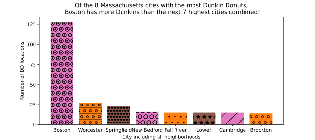
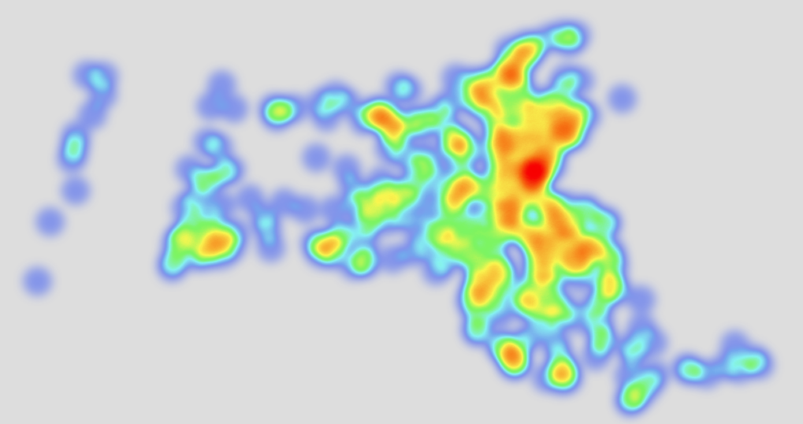
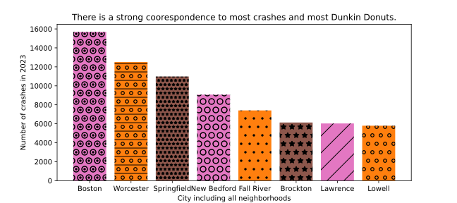
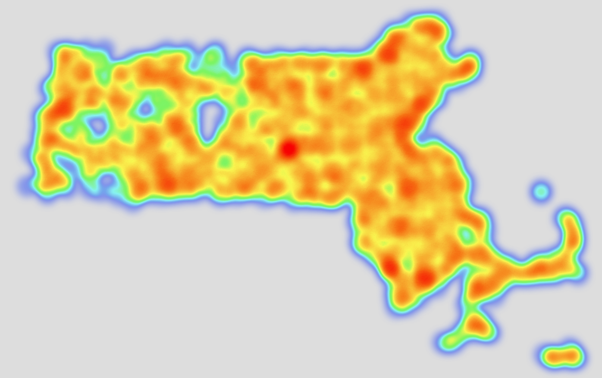

We all know America Runs on Dunkin But are we running too fast?
Of the 351 cities and towns in Massachusetts, 252 have at least One Dunkin Donuts location.

That means 99 cities/towns are lacking in the Dunkins department.
Below we have a heat map of all 1074 Dunkin Donuts location in Massachusetts.

Of the 351 cities and towns in Massachusetts, 343 had at least one recorded crash in 2023.

That means only 8 cities were crash free.
And here we have a heat map of all 316,056 recorded car crashes in Massachusetts during the year 2023.

Although there seems to be a coorelation between the quantity of Dunkin Donuts locations and the number of car crashes in Massachusetts cities and towns, further research is needed before I plan on kicking the coffee and Joe habit!